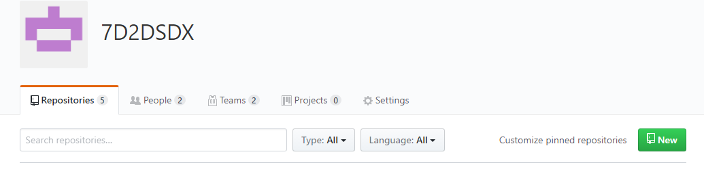
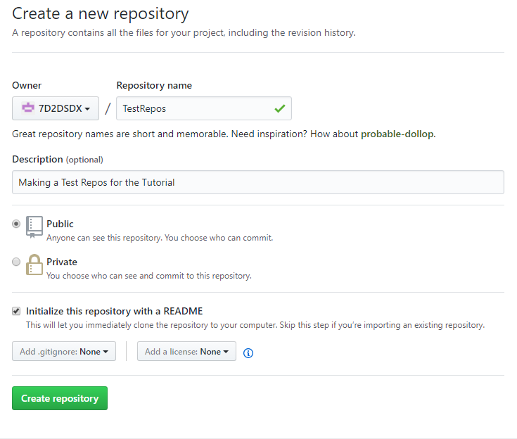
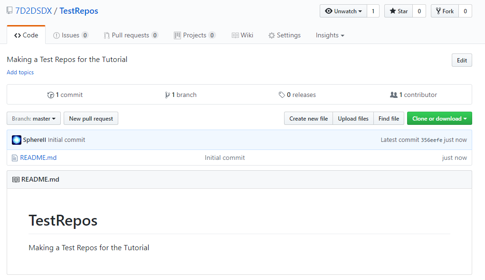
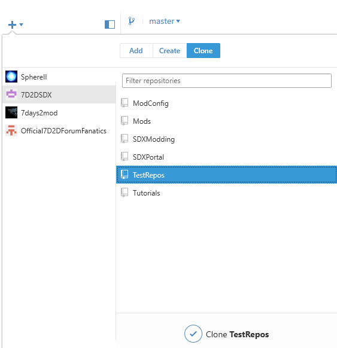
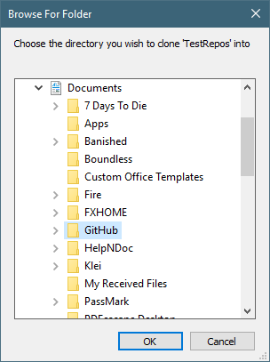

Once you have GitHub Desktop installed, and an account created, it's time to make a "repo", which is short for Repository. For each of your projects, you'll usually want to have a separate repos for.
In your web browser, go to your main GitHub Page. The website is http://github.com/<YourUsername>
Click on the New button on your main screen.

Fill in the form with relevant values:

We are making a new repo called "TestRepos", and we added a short description. We decided to "Initialize this repository with a README", so it'll do a bit of leg work for us. We can then edit that readme to add more stuff
Once you've clicked on "Create repository", you'll be taken to your new GitHub Repos:

In GitHub Desktop, click on the Plus Sign at the top corner, select your account ( "7D2DSDX" in this example ), and select which Repos ( "TestRespos" in this example ):

Once you click on "Clone TestRepos", you'll be asked where you want to clone, or copy, the repos. By default, it's under Documents\GitHub\

Clicking okay will create a new folder under Documents\Github\TestRepos\.
Created with the Personal Edition of HelpNDoc: Produce electronic books easily